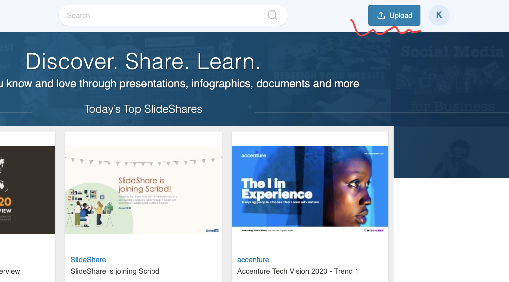
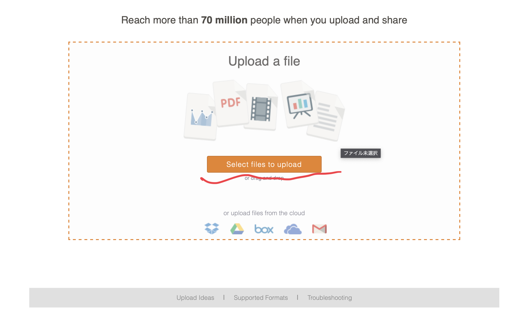
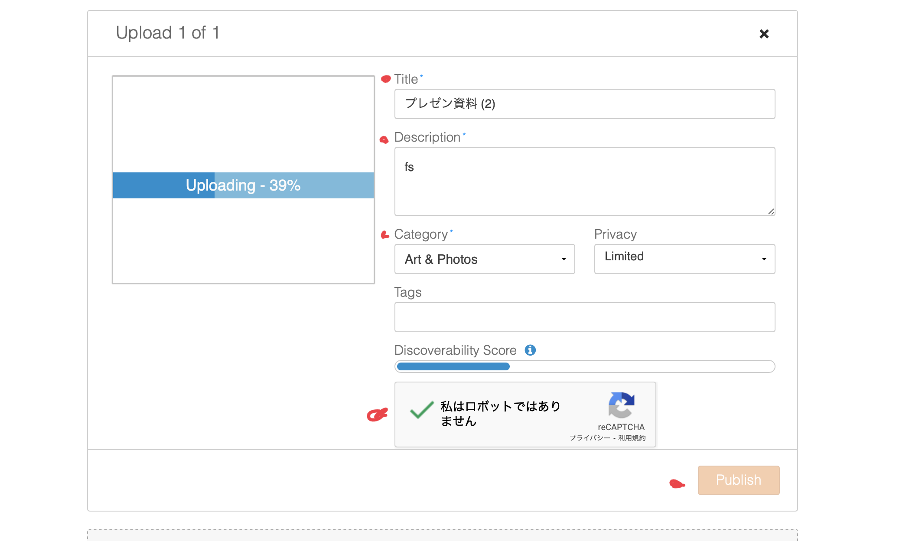
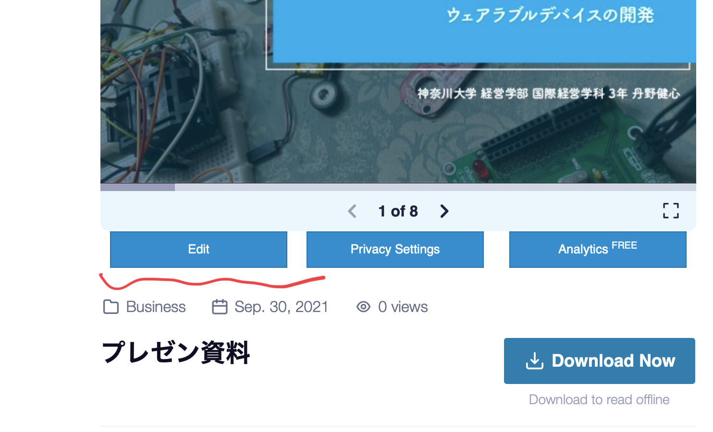
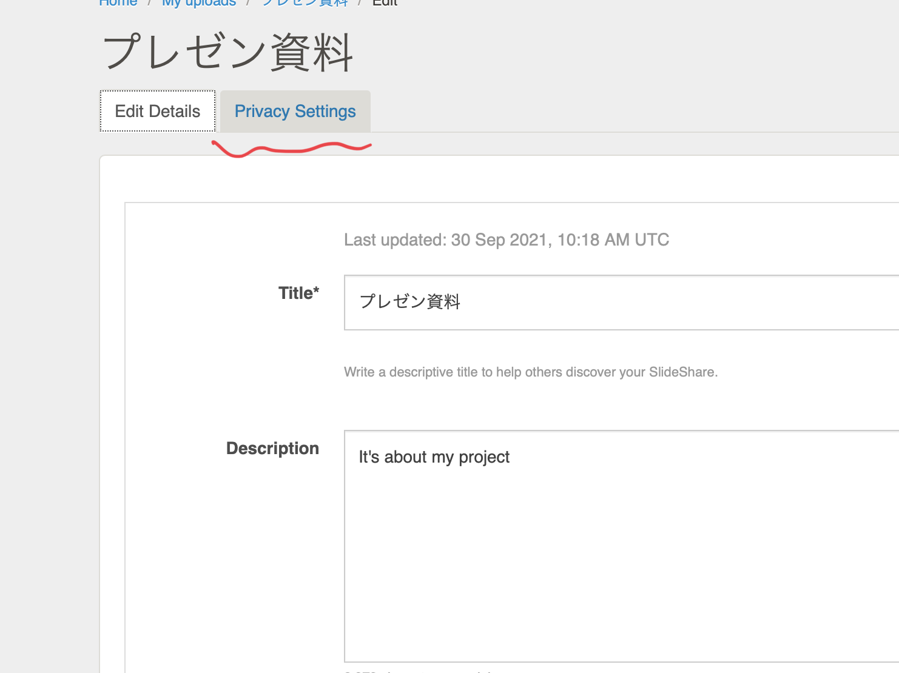
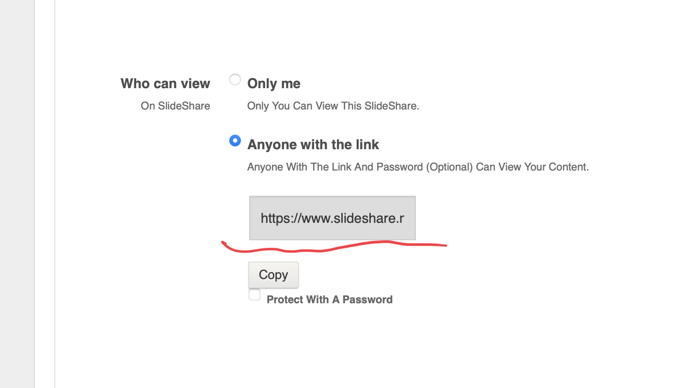

Hello!
プレゼンスライドURL : https://www.slideshare.net/secret/1tgAvBuozZBxQL
・私はslideshareを使用してアップロードしています。

・まずログイン。
・その後右上にあるUpload選択。

・ファイルを選択。

・赤丸の部分の必要事項を編集。
・ファイルのサイズが300MBを超えているとアップロードできません。

・アップロードしたらスライドのところのEDITを選択。

・赤線のPrivacy Settingsに移動。

・赤線の部分のURLをコピー。
・URLとアップロードの仕方を簡単に書きました。
Fin.